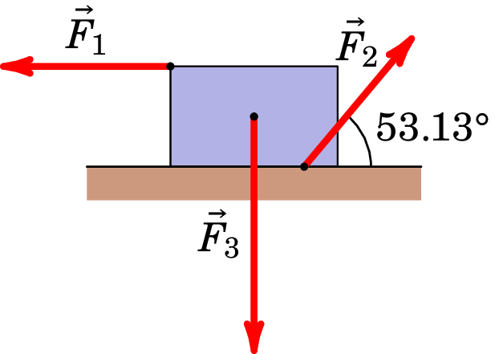

Jaime E. Villate. Topics of Mechanics,
University of Porto, Portugal, 2025.
Respostas obtidas admitindo m/s2.
22. De acordo com o esquema abaixo representado, um bloco de massa 5 kg é deslocado horizontalmente, da esquerda para a direita, ao longo de uma distância de 6 m, por ação de uma força de magnitude 40 N, cuja direção forma um ângulo de 60° com a horizontal. Sabendo que o bloco partiu do repouso e que o coeficiente de atrito cinético entre o bloco e a superfície é de , determine:
23. Um trabalhador exerce uma força para empurrar um automóvel que está sem bateria. Esta força é uniforme e de intensidade igual a 210 N, fazendo um ângulo de 30° em relação à direção do movimento, deslocando o automóvel numa distância de 18 m.
24. Pai e filho disputam uma corrida. A dada altura da corrida, o pai atinge metade da energia cinética do filho, cuja massa é metade da massa do pai. De seguida, o pai aumenta a sua velocidade em 1,0 m/s, atingindo a mesma energia cinética do filho. O filho manteve sempre a velocidade durante a m m corrida. Determine as velocidades iniciais do pai e do filho. m/s; m/s.
25. Uma força de magnitude constante e igual a 5.0 N é aplicada a uma caixa de 2.0 kg que se movimenta num plano . A caixa possui velocidade inicial de m/s e termina com velocidade de m/s. Qual foi o trabalho realizado pela força durante este deslocamento? 20 J.
26. Uma caixa está sujeita à ação de três forças, , e , como mostra a figura. Os módulos de cada uma das forças são, N, N e N. A caixa desloca-se 3 m para a esquerda sob a ação das três forças. Calcule o trabalho total realizado sobre a caixa pelas três forças. A energia cinética da caixa aumentou ou diminuiu? 1.5 J, e a energia cinética aumentou.
27. Uma força horizontal de módulo 20 N é aplicada sobre um livro de 3 kg, fazendo com que este se desloque 0.5 m na rampa, como se pode ver na figura abaixo. A rampa possui inclinação de 30°. Considere que não existe atrito entre o chão e o livro.
28. Um elevador de carga está carregado e apresenta uma massa total (elevador e carga) de 1200 kg. Este elevador deverá conseguir subir 54 m em 3 minutos. O contrapeso do elevador é de 950 kg. Que potência média deve ser debitada pelo motor do elevador para o cabo de tração, de modo a cumprir a elevação requerida? 733.3 W.
29. Uma bola de massa 0.341 kg está pendurada por uma haste rígida, de massa desprezável e comprimento 0.452 m, que articula sobre o centro, conforme representado na figura abaixo. A haste está inicialmente na horizontal, A, sendo depois empurrada para baixo com força suficiente de modo a que a bola atinja o ponto mais alto, D, com velocidade nula.
30. Na figura abaixo apresentada pode-se observar uma mola, cuja constante elástica é igual a 170 N/m. Esta está presa do alto de um plano inclinado a 37°, sem atrito. A extremidade inferior do plano está a 1 m do ponto de relaxação da mola. Uma lata de 2 kg é empurrada contra a mola durante 0.2 m e libertada do repouso. Determine a velocidade da lata: